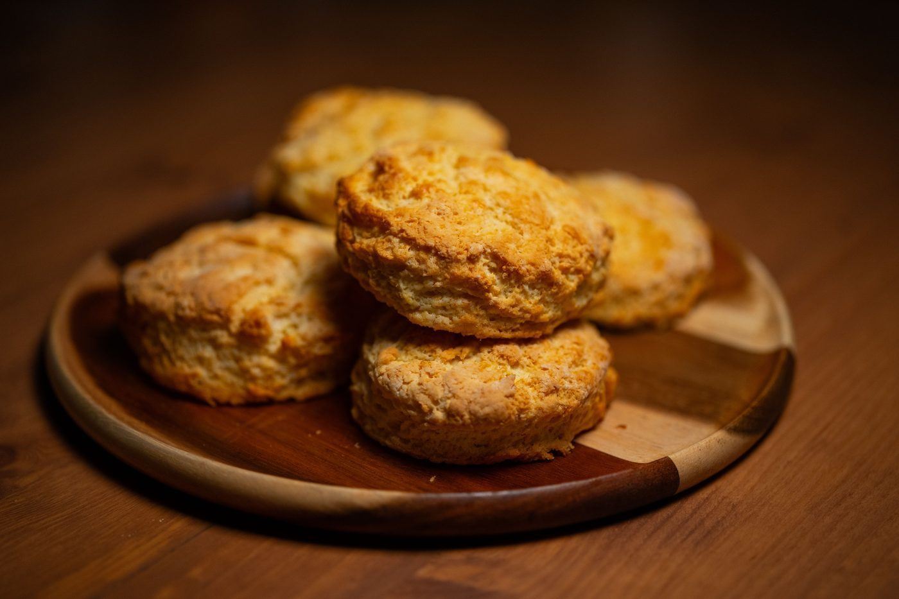
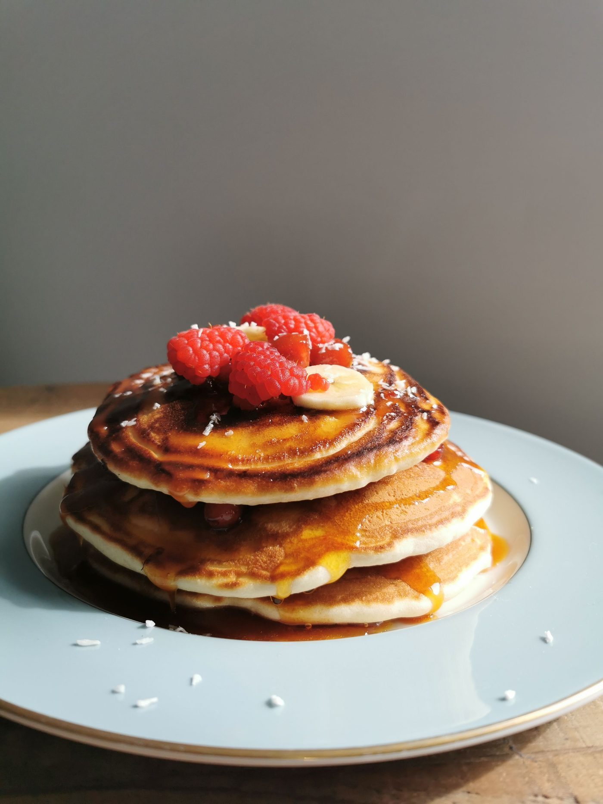
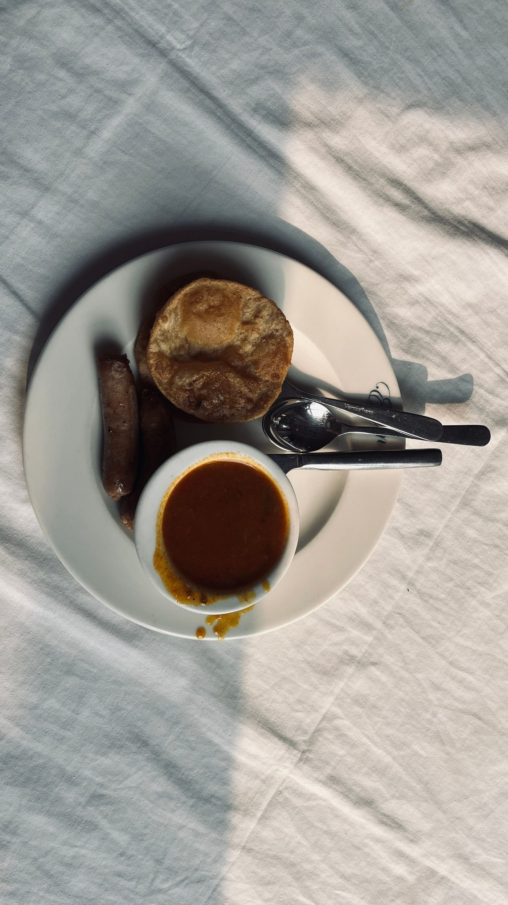

Olde Towne Slidell, Louisiana
Terry Lynn's Cafe & Creative is a traditional New Orleans and Cajun-Creole homestyle cafe in Olde Towne Slidell. Call to ask about soups, salads, po-boys, hot meals, desserts, catering, or a private party.

Terry Lynn's Cafe & Creative serves traditional New Orleans and Cajun-Creole homestyle cooking in Olde Towne Slidell, and everything is fresh and home cooked. It offers on- and off-site catering and private-party rental, plus eat-in and take-out. Favorites include the roast beef po-boy, Terry's Swamp Bread, red beans and rice, New Orleans muffuletta, chicken sausage gumbo, shrimp Philly wraps, hot sausage, Gouda grits, omelets, pancakes, club sandwiches, eggplant parmesan, fried green beans, and hamburger steak. No menu prices are published in research, so call or email with questions.


1960 1st Street, Slidell, LA 70458
Monday to Friday 6:30 AM to 2:00 PM; breakfast 6:30 AM to 10:00 AM; lunch 11:00 AM to 2:00 PM; closed Saturday and Sunday